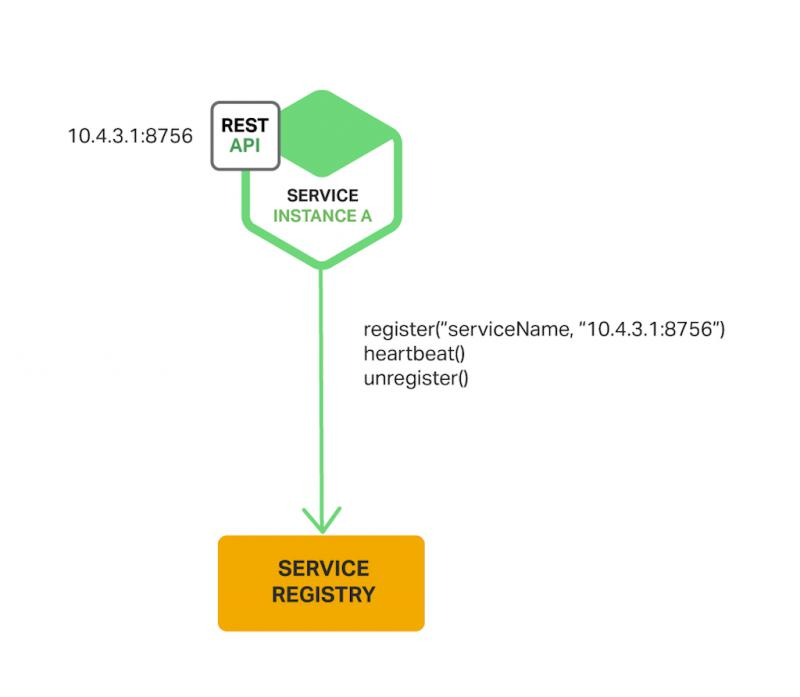
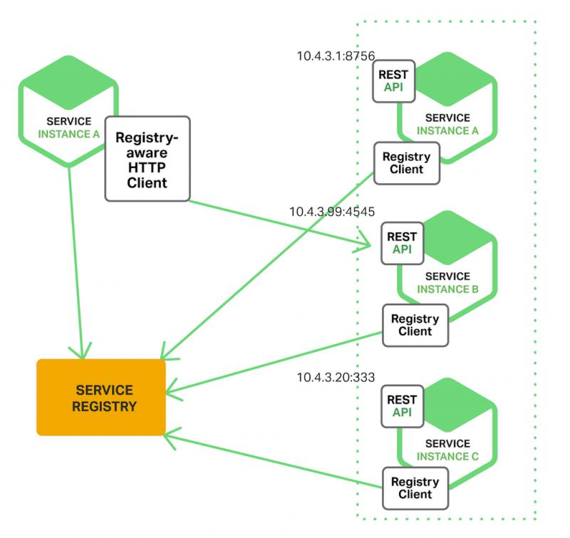

白话讲解微服务注册发现及负载均衡原文出处:本文由博客园博主字母哥博客提供。
原文连接:https://www.cnblogs.com/zimug/p/12026827.html
一、公益图书馆例子
笔者不想直接用专业的术语来说明“微服务注册与发现”，所以我们来看生活中的一个案例：“公益图书馆”。随着人们生活水平的不断提高，追求精神食粮的朋友也越来越多。笔者曾经在一些城市看见过公益图书馆，其运行逻辑是：一些公益组织和个人提供一块场所，然后由组织内的人向图书馆内捐书。捐出的书越多，一段时间内能够借阅的书也就越多。这种做法有助于大家分享图书、节约资金、交流读书心得。那我们来看一下几个关键环节：
- 捐书：组织内的人向公益图书馆捐书，是不是直接将书放到书架上就完事了呢？当然不是，是先向图书管理系统记录一下捐书的人、书名、捐书的时间等信息，再将书放到书架上。
- 借书：借书的人通常是通过图书管理系统的一个小程序查询图书，然后取书，全靠自觉。图书可能存在多个副本（多人捐的同一种书），借书的人会根据书籍状态择优选择。
- 这其中非常重要的一个角色就是图书管理系统及其小程序，为大家捐书、借书提供了数据支持和集中管理功能。
- 兼职图书管理员定期维护图书，将破损图书从图书管理系统中下架维护。
其实上面的这个“公益图书馆的例子”就是典型的服务注册与发现：
- 每一本图书就是一个服务，捐书的过程就是“服务注册”的过程。
- 借书的查询图书的过程就是“服务发现”的过程。
- 其中最重要的角色：图书管理系统、管理员及其小程序，就是服务注册中心或者服务注册平台。
- 捐书者可能同时是借书者。进行服务注册的微服务节点，同时可能也使用服务发现机制发现其他微服务。
- 捐书是主动行为，不是被动行为。这和微服务的注册是一样的，微服务必须在启动的时候向服务注册组件进行主动注册。这样做的目的就是降低数据维护成本，不需要专人维护注册数据。
- 图书下架是被动的，不是主动的，不是捐书的人将其下架。微服务也是一样，当服务出现故障发生问题，服务发现注册组件应具备将服务下线的能力。
- 图书管理员可以检查图书并下架，这过程在服务注册与发现中被称为：健康检查
- 对于同一种图书可能存在多个同样的副本，由使用者择优选择借哪一本书。对于服务发现获得的结果：同一种服务的多个副本的情况，由服务调用者择优决定使用哪一个服务副本。这种服务方式比较专业的说法是：客户端负载均衡。
与客户端负载均衡相对的方法就是服务端负载均衡，如果上面的例子中借书过程一本书有多个副本，由图书管理员或系统决定借书者借其中的哪一个副本，这个就是服务端负载均衡。
二、服务注册与发现
- 服务注册 -服务在中央注册表中注册其服务位置的过程。通常注册其主机和端口，有时还注册认证凭证，协议，版本号和或环境信息。
- 服务发现 -客户端应用程序查询中央注册表以了解服务位置的过程。
- 维护中央注册表的角色被称为服务注册平台或者服务注册中心
2.1. 服务注册
当一个微服务启动的时候，必须主动向服务注册中心注册其服务地址，以供其他微服务查询调用。图中橘黄色为服务注册中心，绿色为微服务节点。

2.2.客户端负载均衡
当一个微服务有多个副本的时候，由调用者决定使用哪一个副本提供服务。

三、Spring Cloud常用的服务注册中心
- Eureka：Spring Cloud的大儿子，出生的时候条件一般，长大后素质有限
- Nacos：后起之秀，曾经Spring Cloud眼中“别人家的孩子”，已经纳入收养范围（孵化项目）。
- Apache Zookeeper：关系户，与hadoop关系比较好
- etcd：关系户，与kubernetes关系比较好
- Consul：关系户，曾经与docker关系比较好
如果你的应用已经使用到了hadoop、kubernetes、docker，在Spring Cloud实施过程中可以考虑使用其关系户组件，避免搭建两套注册中心，节省资源。但是二者兼容使用说说容易，真正用起来还需要功夫。目前看，笔者觉得与Spring Cloud关系最好的应该是Nacos。
期待您的关注